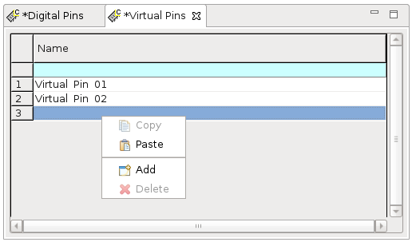

Virtual Pins editor
Virtual pin names are specified using the Virtual Pins editor.
Virtual Pins editor

The following table describes the parameters in the Virtual Pins editor.
Name |
A descriptive name for the virtual pin. The pin name can have alphanumeric characters. Spaces and the following characters are not allowed: # ; ("' ) ? @ , The pin name is displayed in other SmarTest tools and windows when they refer to this pin. Using the virtual pin feature you can log test results from the SMC_TEST(), TESTSET().judgeAndLog_ParametricTest() and TESTSET().judgeAndLog_ScanTest() APIs using the virtual pin names you have defined. |
The following table describes the functionality used for adding and modifying pins in the Virtual Pins editor.
Copy |
Copy the name of the selected pin to the clipboard. |
|
Paste |
Paste the name of the pin on the clipboard to a pin entry. |
|
Add |
Add a new pin entry to the end of the virtual pins list. |
|
Delete |
Delete the pin selected by its pin number. |
Functional changes
- Introduced in SmarTest 7.10.0